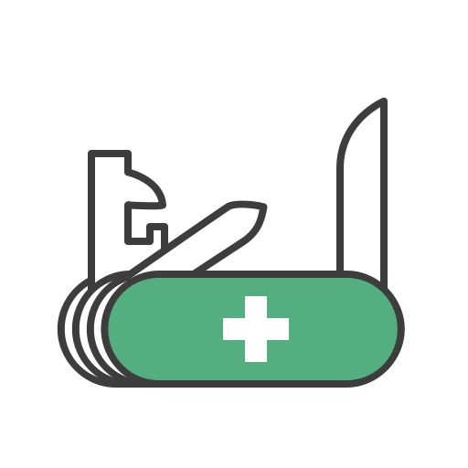

openUR
spelled opener!
.
Save the current page's link
Save
-- or if you wish to save a link manually; enter it below --
Save all open webpage's link
Save All
Saved links
0
links saved!
Open all links in new tabs
Open All
Clear all saved links
Clear All